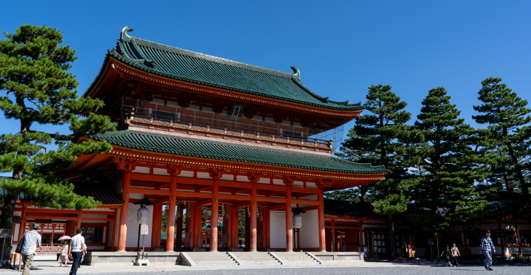
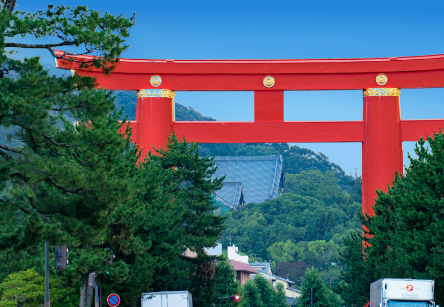
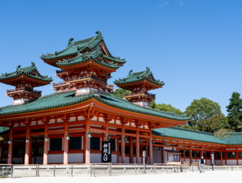
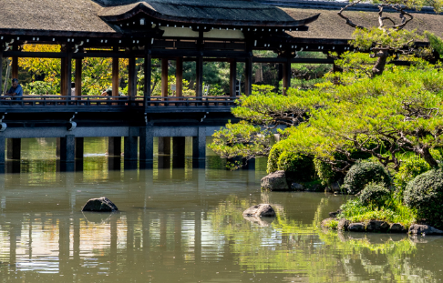
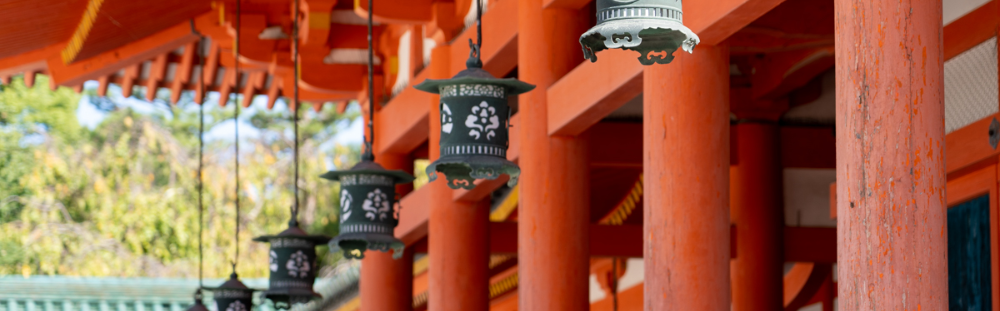

<html lang="ja">

<head>
<meta name="robots" content="noindex">
<meta charset="UTF-8">
<title>1100年の時を超えて蘇る「平安神宮」｜KYOTOLOGY</title>
<meta name="viewport" content="width=device-width,initial-scale=1.0">
<meta http-equiv="X-UA-Compatible" content="IE=edge">
<link rel="stylesheet" href="./lib/css/header.css">
<link rel="stylesheet" href="./lib/css/footer.css">
<link rel="stylesheet" href="./lib/css/under.css">
<link rel="stylesheet" href="./lib/css/reset.css">
<link rel="stylesheet" href="./lib/css/slick.css">
<link rel="stylesheet" href="./lib/css/slick-theme.css">
<link rel="stylesheet" href="./lib/css/common.min.css">
<link rel="stylesheet" href="./lib/css/drawer.min.css">
<link href="https://fonts.googleapis.com/css?family=Didact+Gothic|Noto+Sans+JP:400,500&display=swap" rel="stylesheet">
</head>

<body class="drawer drawer--left">
<!-- ヘッダー -->
<header id="header">
<div class="sp-only">
<h1 id="sp-logo"><a href="./top.html"></a></h1>
</div>
<button type="button" class="drawer-toggle drawer-hamburger">
<span class="sr-only">toggle navigation</span>
<span class="drawer-hamburger-icon"></span>
</button>
<!-- <div class="dropdown">
<input id="tg-02" class="dropInput-02" type="checkbox">
<label for="tg-02" class="dropLabel">JP</label>
<ul class="menu animation">
<li><a class="item" href="#">JP</a></li>
<li><a class="item" href="#">en</a></li>
</ul>
</div> -->
<div class="fixed-top flex pc-only">
  <!-- <div class="dropdown">
  <input id="tg-02" class="dropInput-02" type="checkbox">
  <label for="tg-02" class="dropLabel">JP</label>
  <ul class="menu animation">
  <li><a class="item" href="#">JP</a></li>
  <li><a class="item" href="#">en</a></li>
  </ul>
  </div> -->
<h1><a href="./top.html"></a></h1>
</div>
<div class="fixed-left pc-only">
<ul class="sns-link">
<li class="mb-1"><a href="#"></a></li>
<!-- <li><a href="#"></a></li> -->
</ul>
</div>
<div class="fixed-bottom">
<div class="booking-btn bg-gold"><a href="http://www.booking.com/Share-mP9UCe" target="_blank">ご予約はこちら</a></div>
</div>
<a href="#about" class="scroll top-only fff">Scroll</a>
<a href="#" class="pagetop fff">TOP</a>
<nav class="drawer-nav">
<ul class="drawer-menu">
<li><a class="drawer-menu-item" href="./top.html">ホーム<span class="gold">home</span></a></li>
<li><a class="drawer-menu-item" href="./room.html">客室案内<span class="gold">Room information</span></a></li>
<li><a class="drawer-menu-item" href="./floor.html">館内案内<span class="gold">floor guide</span></a></li>
<li><a class="drawer-menu-item" href="./kyoto.html">京都観光情報<span class="gold">Room information</span></a></li>
<li>
<ul>
<li><a class="drawer-menu-item" href="./contact.html">お問い合わせ</a></li>
<li><a class="drawer-menu-item" href="./top.html#access">アクセス</a></li>
</ul>
</li>
<li class="booking-btn"><a class="drawer-menu-item strong bg-gold" href="http://www.booking.com/Share-mP9UCe" target="_blank">ご予約はこちら</a></li>
</ul>
<!-- <div class="dropdown">
<input id="tg-02" class="dropInput-02" type="checkbox">
<label for="tg-02" class="dropLabel">JP</label>
<ul class="menu animation">
<li><a class="item" href="#">JP</a></li>
<li><a class="item" href="#">en</a></li>
</ul>
</div> -->
</nav>
</header>
<!-- ヘッダー終了 -->

<!-- メインコンテンツ -->
<main>
<section id="post-contnt" class="sec">
<div class="layout-01 mb-3">
<div class="images-wrap">

<p class="cap">「応天門」</p>
</div>
<div class="text-box">
<h2>1100年の時を超えて蘇る<br>「平安神宮」</h2>
<p class="eng">Heian Jingu ShrinE</p>
</div>
</div>
<div id="about" class="wrap">
<h2 class="txt-c mb-3 mt-3">京都の復興を象徴する<br class="sp-only">建築物</h2>
<div class="layout-01 mb-3">
<div class="images-wrap">

<p class="cap">「大鳥居」</p>
</div>
<div class="text-box">
<p>
平安神宮は、1895年に平安遷都1100年を記念して創建されました。<br>創建前、京都の市街地は幕末の戦乱で荒廃し、東京へ都とともに公家や有力商人などが移ったことにより、地場産業も大打撃を受けていました。そこで、京都に対して熱い思いを持った市民たちが、復興事業として教育・文化・産業・観光業など様々な分野で日本国内初の取り組みを行い、その集大成として創建されたのが平安神宮です。平安神宮の創建は、都が京都から東京に移るまでの約1000年間に蓄積された文化や技術が京都に存在するということを全国に広める機会となりました。<br>そして今では、平安神宮のシンボルともなっている境内の外にある大鳥居は、1928年に昭和天皇の即位を記念して建設されたもので、当時では日本一の大きさを誇っていました。
</p>
</div>
</div>

<div class="layout-01 mb-3">
<div class="images-wrap">

<p class="cap">「大極殿」</p>
</div>
<div class="text-box">
<h2 class="layer">平安京の<br>荘厳な世界</h2>
<p>
平安神宮は、当時の都である平安京を約8分の5の規模で再現しています。国家行事が行われたり諸官庁が置かれていたその場所には、約1200年前と全く同じ景色が広がっています。<br>そして、そこへ一歩足を踏み入れてから外に出るまでの間、外の景色が一切見えないように設計されており、まさに非日常の空間を味わうことができます。<br>建物は、日本国内でも平安神宮にしか存在しない「宮殿造り」です。天皇が関係する建物にのみ使用が許された緑色の瓦の屋根であることから、最も格式が高い建築様式であったことが分かります。
</p>
</div>
</div>

<div class="layout-01 mb-3">
<div class="images-wrap">

<p class="cap">「神苑内の泰平閣」</p>
</div>
<div class="text-box">
<h2 class="layer">四季折々に<br>風景を変える庭園</h2>
<p>
京都は、古くから水質は良いものの水量が少ない土地柄であったため、水を使わない庭園が発達してきました。<br>しかし、都が東京へ移った際、復興事業の１つとして、滋賀県にある琵琶湖から水を引き、水力で新しい工場を興し、舟で物資の行き来を盛んにする計画のため「琵琶湖疏水」を建設しました。それにより、近代庭園を代表する庭師である７代目小川治兵衛は、疏水の水を巧みに取り入れ、広大な面積を持つ平安神宮神苑を大きな池のある庭園に仕上げたのです。<br>京都御所より移築された「泰平閣」から眺める池の風景は見事ですが、その他にも、神苑内のところどころにあるベンチは、美しい景色が見える場所に設置されていますので、少しゆっくり座って眺めてみてはいかがでしょうか。四季折々の風景を見せる神苑ですが、特に春の季節には、桜がとても綺麗に咲き誇ります。
</p>
</div>
</div>

<div class="mb-3">
<div class="images-wrap">
<h2 class="layer">永遠に続く京の都</h2>

<p class="cap">「神苑内の泰平閣」</p>
</div>
<p class="mt-2">
平安神宮では、建物や庭園といったすべてのものを変えることなく残していくことを最も大切にされています。<br>変わり行く月日の中で、現状維持していくことは非常に難しいですが、訪れた人が30年後、50年後、いつまでも、いつ訪れても同じ景色を見られるようにしたいという強い思いで取り組まれているのです。その思いは、京都を復興するべく立ち上がった当時の市民の姿と重なります。<br>京都に都が1000年以上も留まったことで、未だに当時の文化や技術が継承され、大切にされており、それが京都という場所が全国の人々から愛されている所以なのではないでしょうか。
</p>
</div>
</div>
</section>

<section id="post-info" class="txt-c sec">
<div class="wrap">
<h2>平安神宮</h2>
<p>営業時間：6:00〜16:30（時期によって異なりますので詳しくはHPでご確認ください。）</p>
<p>公式HP：<a class="gold" href="http://www.heianjingu.or.jp/" target="_blank">http://www.heianjingu.or.jp</a></p>
<div class="flex mt-2">
<iframe
src="https://www.google.com/maps/embed?pb=!1m18!1m12!1m3!1d3267.6409893382756!2d135.78065801529974!3d35.015691080354905!2m3!1f0!2f0!3f0!3m2!1i1024!2i768!4f13.1!3m3!1m2!1s0x600108e5187cc88d%3A0x75bed992d897454f!2z5bmz5a6J56We5a6u!5e0!3m2!1sja!2sjp!4v1574732693218!5m2!1sja!2sjp"
height="250" frameborder="0" style="border:0;" allowfullscreen=""></iframe>
<div class="text-wrap txt-l">
<p>〒606-8341<br>京都市左京区岡崎西天王町97</p>
<a class="gold" href="https://goo.gl/maps/pu1yfe4TWzbExiFD7" target="_blank">Google Mapsで見る</a>
<p class="mt-1">最寄り駅：地下鉄東西線「東山」下車　徒歩10分
<br>最寄りのバス停：市バス「岡崎公園　美術館・平安神宮前」下車　徒歩5分
<br>入場料：参拝無料／神苑拝観料　大人600円　子供300円</p>
</div>
</div>
</div>
</section>

<!-- フッター -->
<footer id="footer">
<div class="wrap flex">
<div class="">
<div class="">
<div class="images-wrap">

</div>
<p>京都府京都市東山区大仏南門通大和大路東入<br>3丁目本瓦町672-6</p>
<p><span class="gold">tel :</span><a href="tel:+81-50-3204-4328"> +81 50 3204 4328</a><br><span class="gold">mail:</span><a href="mailto:info@kyotology.com"> info@kyotology.com</a></p>
</div>
<div class="pc-only">
<ul class="mt-1">
<li><a href="./top.html">ホーム</a></li>
<li><a href="./room.html">客室案内</a></li>
<li><a href="./floor.html">館内案内</a></li>
</ul>
<ul>
<li><a href="./kyoto.html">京都観光情報</a></li>
<li><a href="./top.html#access">アクセス</a></li>
<li><a href="./contact.html">お問い合わせ</a></li>
</ul>
</div>
<ul class="sns-link sp-only mb-1 mt-2">
<li class="mb-1"><a href="https://www.facebook.com/kyotology/" target="_blank"></a></li>
<!-- <li><a href="#"></a></li> -->
</ul>
</div>
<iframe src="https://www.facebook.com/plugins/page.php?href=https%3A%2F%2Fwww.facebook.com%2Fkyotology%2F&tabs=timeline&width=314px&height=314px&small_header=true&adapt_container_width=true&hide_cover=true&show_facepile=false&appId" width="314px" height="314px" style="border:none;overflow:hidden;margin:0 auto" scrolling="no" frameborder="0" allowTransparency="true" allow="encrypted-media"></iframe>
</div>
<div class="footer-small">
<div class="wrap flex">
<ul>
<li><a href="./privacy-policy.html">プライバシーポリシー</a></li>
<li><a href="./terms.html">特定商取引法に基づく表示</a></li>
<li><a href="./sitemap.html">サイトマップ</a></li>
<li><small>© 2019 kyotology</small></li>
</ul>
</div>
</div>
</footer>
<!-- フッター終了 -->
</main>
<!-- メインコンテンツ終了 -->

<script type="text/javascript" src="./lib/js/jquery.min.js"></script>
<script type="text/javascript" src="./lib/js/iscroll.js"></script>
<script type="text/javascript" src="./lib/js/drawer.min.js"></script>
<script type="text/javascript" src="./lib/js/slick.min.js"></script>
<script type="text/javascript" src="./lib/js/app.js"></script>
<script type="text/javascript" src="./lib/js/jquery.bgswitcher.js"></script>

</body>

</html>
